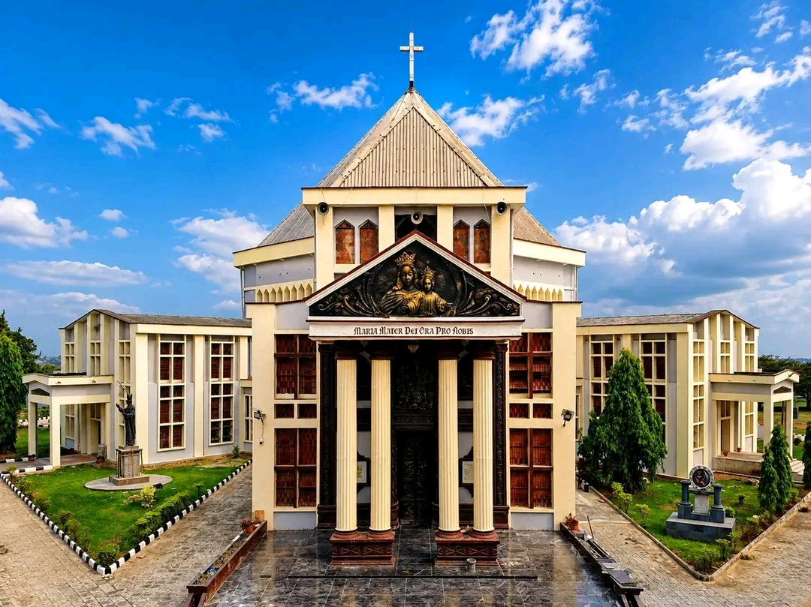

Every Thursday
Eucharistic Adoration
Spend time in quiet prayer before the Blessed Sacrament.

Home Mass times
The Mass is at the heart of our parish life. We look forward to welcoming you.
Plan your visit
Join us for Holy Mass throughout the week. All are welcome to worship with us.
Every Sunday
Prayer through the week
Every Thursday
Spend time in quiet prayer before the Blessed Sacrament.
Sundays except the first Sunday
A time to learn about the church and her teachings, followed by Benediction.
First Sunday of the month
Join the parish for evening prayer and Benediction.
Need current information before your visit?
Contact the parish